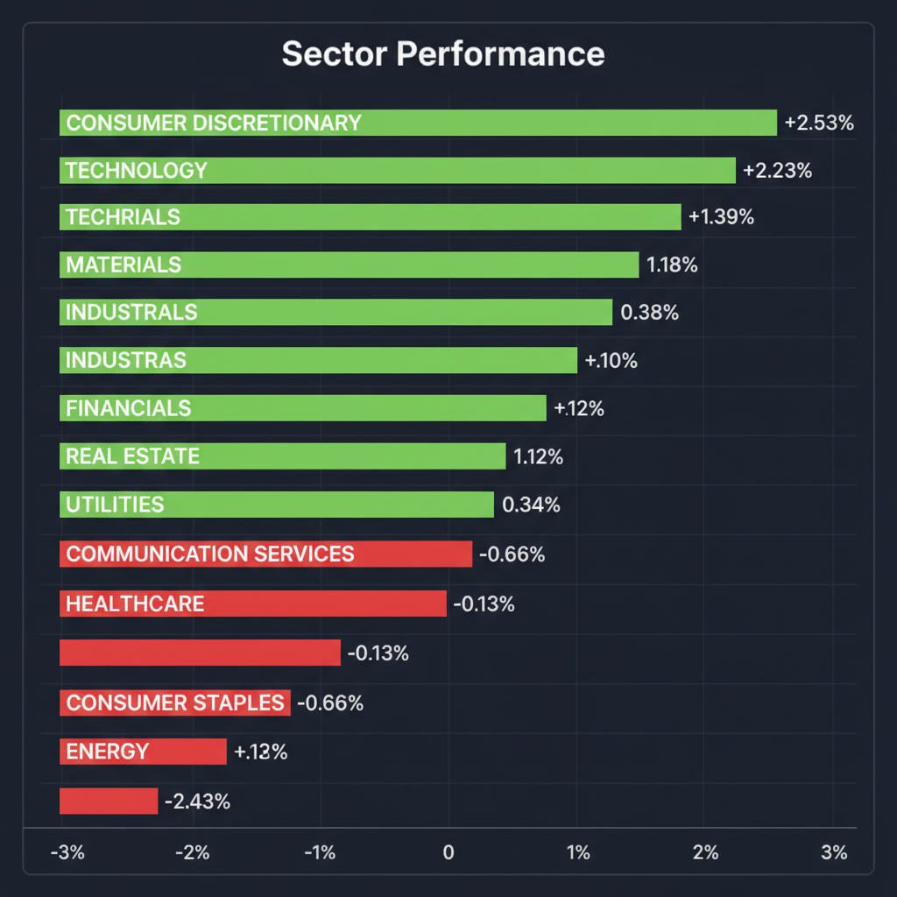
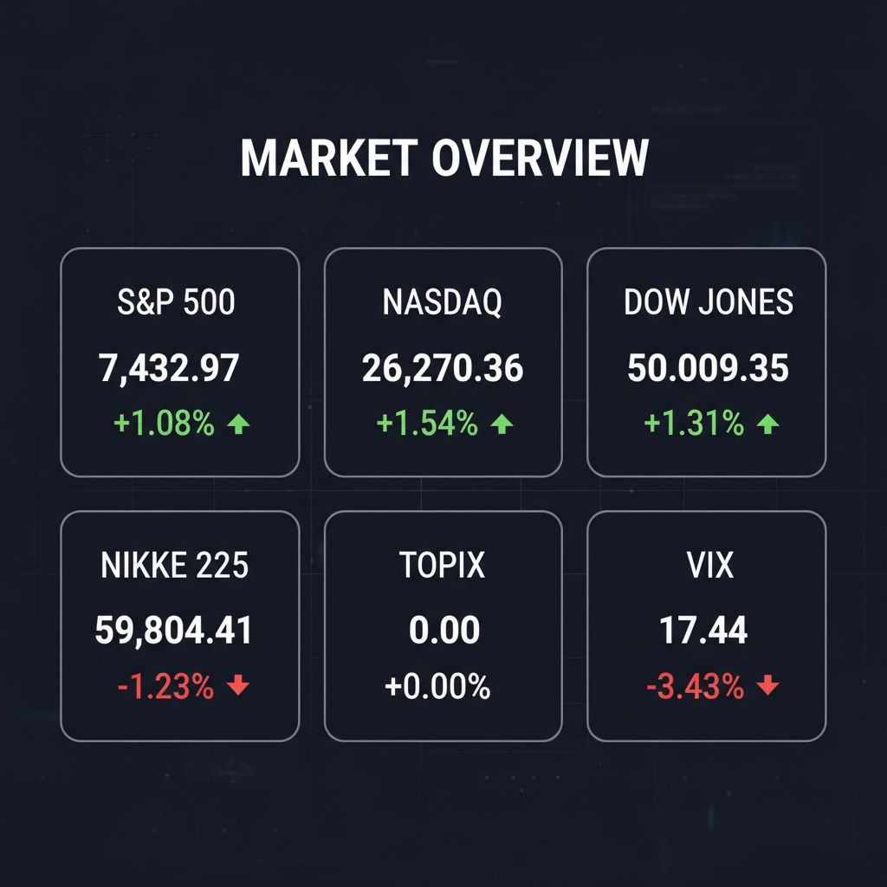

Daily Investment Report - 2026-05-21
Generated: 2026/5/21 7:39:45


1. エグゼクティブサマリー
- 米国市場は反発を見せているものの、巨大な債券市場の利回り上昇圧力と、大型ハイテク株の好業績に対する株価の無反応（完璧な織り込み済み）が、相場の転換点を示唆しています。
- AIの一極集中から、防衛・インフラ・次世代バイオなど「地政学リスクとマクロの歪み」を解決する中小型株や、政策期待に支えられる日本株内需セクターへ資金のローテーションが始まっています。
- 投資家は大型株の追認買いを避け、キャッシュ比率を引き上げてテールリスクに備えつつ、ニッチトップの隠れた中小型成長株・バリュー株を狙う局面に移行すべきです。
2. 注目銘柄リスト
強気（買い推奨）
- セーレン（非公開/日本） [時価総額: 約1,300億円]: 報酬300円で社員から年2万件の問題報告を集める極めて強固な現場主義のガバナンスを持ち、安定したROEを稼ぎ出す安全マージンの高いバリュー株として推奨します。
- Liberaware（218A/日本） [時価総額: 数十億円規模]: 狭小空間を点検する超小型ドローンを展開しており、インフラ老朽化や陥没穴（シンクホール）問題など巨大な社会課題を背景に猛烈な売上成長が期待できる初期段階のディスラプターです。
- Generation Bio（GBIO/米国） [時価総額: 約2億ドル]: メガファーマが血眼で探す「非ウイルス性遺伝子治療」の独自技術を持ち、Modernaとの提携による潤沢な資金で倒産リスクを抑えつつ、次なる買収ターゲットとして10倍化のアップサイドを秘めています。
中立（様子見）
- RBC Bearings（ROLL/米国） [時価総額: 約80-90億ドル]: 航空宇宙・防衛向けで高い利益率を誇る優良企業ですが、好決算発表後に株価が急落する「落ちてくるナイフ」状態にあるため、テクニカルな底打ちを確認するまではエントリーを待つべきです。
弱気（警戒）
- カタール航空など航空・クルーズ関連 [時価総額: 銘柄により異なる]: ハンタウイルスの集団感染や空港インフラの崩壊、イラン戦争によるネットワークの深刻な打撃など、アンコントローラブルな外部リスクに直面しており、構造的な利益減少が懸念されます。
- 米国の農業関連銘柄 [時価総額: 銘柄により異なる]: 深刻な干ばつと戦争起因のエネルギーコスト増という二重苦に見舞われており、株価が割安に見えても利益が先細る「バリュートラップ」に陥る危険性が高いため回避を推奨します。
3. セクター推奨ランキング
- 1位：インダストリアル（資本財）および防衛インフラ（XLI）
サプライチェーンの再構築、UAEのホルムズ海峡迂回パイプライン建設、ドイツの防空システム配備など、安全性重視の巨大な物理的設備投資が急速に拡大しているため。
高市政権による「消費税減税と給付付き税額控除」の決断期待に加え、日本企業におけるCFO主導の資本コスト経営の浸透が、これまで出遅れていた内需株の強力なリレイティング（評価見直し）を促すため。
- 3位：テクノロジー周辺領域（次世代AIインフラ・サイバーセキュリティ）
半導体本体（NVDA等）はバリュエーションが限界に達しているものの、AIブームを支える冷却技術、電力インフラ、セキュリティなど、出遅れている周辺・ニッチ領域への資金循環が見込めるため。
地政学リスクが存在するにもかかわらず資金流出トレンドが鮮明でテクニカルには弱気ですが、最悪のシナリオ（原油供給ショック・スタグフレーション）に対するポートフォリオの「逆張りヘッジ」として一部需要があるため。
4. 今週の注目イベント
- 今夜：エヌビディア（NVDA）第1四半期決算後の通常取引における価格アクション（セル・ザ・ファクトの定着か反発かの確認）
- 6月中（随時）：高市首相による「食料品の消費税減税と給付付き税額控除」に関する政治的決断の進展
- 随時：ウォーシュ次期FRB議長就任に向けた金融政策（金利高止まり）のスタンスに関する発言
- 随時：イランのホルムズ海峡検問所設置および中東の地政学リスクに関するヘッドライン
5. リスク要因
- 金利高止まりと債券市場の反乱： インフレ高止まりにより、巨大な債券市場が長期金利を急騰させ、市場を牽引してきた高PERのテクノロジー株のバリュエーションが崩壊するリスク。
- 「完璧な織り込み」によるセル・ザ・ファクト： 投資家の期待値が高すぎるため、どれだけ素晴らしい決算を発表しても新規の買い手がおらず、わずかな成長鈍化懸念で株価が急落するリスク。
- スタグフレーション・ショック： イラン情勢の悪化に伴う原油供給ショックと、米農家の干ばつによる食料インフレが同時発生し、金融緩和の道が絶たれるリスク。
- 赤字グロース株の資金枯渇： 金利が高止まりする環境下において、利益化の道筋が不明確な中小型バイオや新興テクノロジー企業の資金繰りが悪化し、流動性ショック時に真っ先に価値を失うリスク。
6. アクションアイテム
- 大型ハイテク株の利益確定とポジション縮小： 既に大きな利益が出ているAI・半導体関連の大型株は直ちに利益確定を行い、ポジションサイズを半減させる。
- キャッシュ比率の大幅引き上げ： ポートフォリオの30〜40%を現金（短期国債など）に振り向け、今後のボラティリティ急拡大時の押し目買い資金として温存する。
- 厳格なストップロス（逆指値）の設定： 保有中の全株式ポジションに対し、「直近3日間の調整における最安値のわずか下」にトレーリングストップを設定し、トレンド転換時の致命傷を回避する。
- 中小型株へのリサーチと資金移行： 市場のノイズに左右されない強固なガバナンスを持つバリュー株（セーレン等）や、インフラ・防衛・次世代バイオのニッチトップ小型株へのエントリー機会を探る。
- テールリスク・ヘッジの構築： オプション市場でのVIXコール購入、または過度に売られているエネルギーセクター（XLE）の打診買いを行い、ブラックスワン（地政学ショック）に備える。